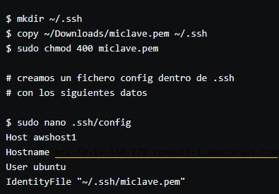

How to set up a web server with Amazon Web Services
Sometimes we need a web server for testing and it does not work with our local development environment because we need to show someone what we are doing and therefore it needs to be uploaded somewhere.
The old way of doing this was to have a web hosting and upload the files by FTP to the host and with the URL of the domain that we had bought we already had an environment that we could teach. This, nowadays, is considered a bit "shabby", being able to make use of the Cloud technologies that we have. Next I tell how to register in Amazon Web Services and mount a LAMP server in one instance.
The most recommended to "trastear" is to open an account in Amazon Web Services (AWS) and launch an Elastic Compute Cloud (EC2) that basically consists of a Linux virtual machine with which we can do what we want, and most importantly , Amazon gives you 1 year free to use, after the year will charge you for hours of use and storage, but the instance you can stop and finish it when you want. In case you want to leave it always running, you can get to pay about € 16 a month.
The first step, as I say, is to make an Amazon Web Services account, if you have an account in the Amazon store, it will work for you. For this we go to aws.amazon.com and click on Get Started for free - Launch virtual machines and apps in minutes.
You will ask for our information to register, as well as a credit / debit card in case we use a non-free service or by the end of our trial period. During the first year of use, if we do not have more than one instance EC2 t1.micro, Amazon will not charge us anything.
To verify that the account is yours we will have to verify our identity by phone, but there is nothing to fear, we will simply call a recording to which we must say the key that the web provides, we can even give you the numbers by pressing the telephone keypad.

Once the account is verified, you will receive an email that the activation is complete and you will be able to access the AWS dashboard.
There we go to EC2 and in the control panel we give to launch new instance. We launched the Quick Launch Wizard, we chose to create a New Key Pair and as a virtual machine we will choose Ubuntu Server 12.04.2 LTS that is free for the t1.micro. We download the .pem file with the private key that we have generated in order to access the virtual machine and we give a following.
Once we have done the previous steps we will have our instance running as we see in the dashboard.

Now to access via terminal to our virtual machine we have the private key .pem that we have downloaded and a URL of type ec2-50-19-140-229.compute-1.amazonaws.com that points to the IP of our instance. To be able to access via SSH in a more comfortable way we will do the following.
This way, whenever we want to access our machine via SSH, we only have to write in the terminal.
We are already inside the Linux instance of AWS, to have it updated it is a good option to do the following.
And to be able to install a LAMP environment, we execute the following:
This will open a menu of options where we can choose to install a LAMP (Linux-Apache-MySQL-PHP) server in a few minutes.
Once the installation is finished, your static web server will be located in the / var / www / directory.
And if we go to our browser and put as URL the one provided by the AWS instance, type ec2-50-19-140-229.compute-1.amazonaws.com we can see the following message:
That means we have created a Linux virtual machine in an EC2 instance of AWS, we have installed a LAMP server and we can already serve static files and PHP based web applications in it.
And to be even cooler, forget about FTPs that is from the time when the websites were full of GIFs, little lights and Flash. Install Git on your machine and pull from your repository on GitHub, Bitbucket or wherever you have it. If you do that, God will kill fewer kittens.